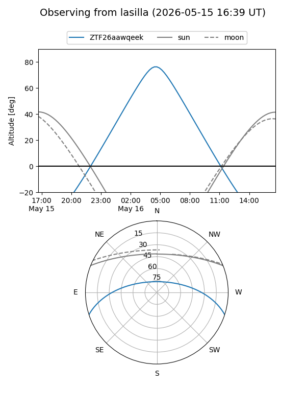
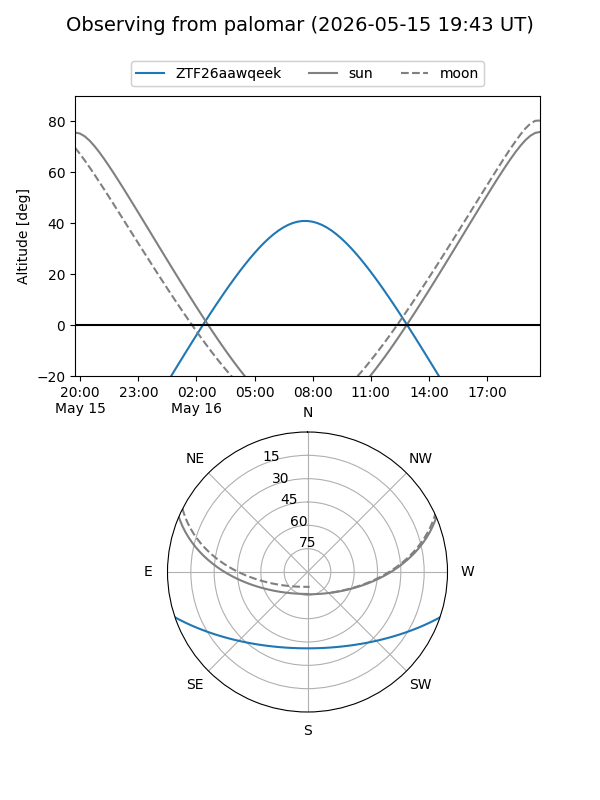

ZTF26aawqeek
Target ZTF26aawqeek at 2026-05-16 09:59
Aliases and brokers:
FINK: link
Lasair: link
ALeRCE: link
alt names
ZTF26aawqeek (ztf,fink_ztf)
Coordinates:
equatorial (ra, dec) = 230.8345,-15.61842
equatorial (HMS+DMS) = 15:23:20.28,-15:37:06.32
galactic (l, b) = (348.2634,+33.56553)
Flags:
Photometry:
last ztfg=19.69
2 ztfg detections
Lightcurve
Visibility


Additional plots